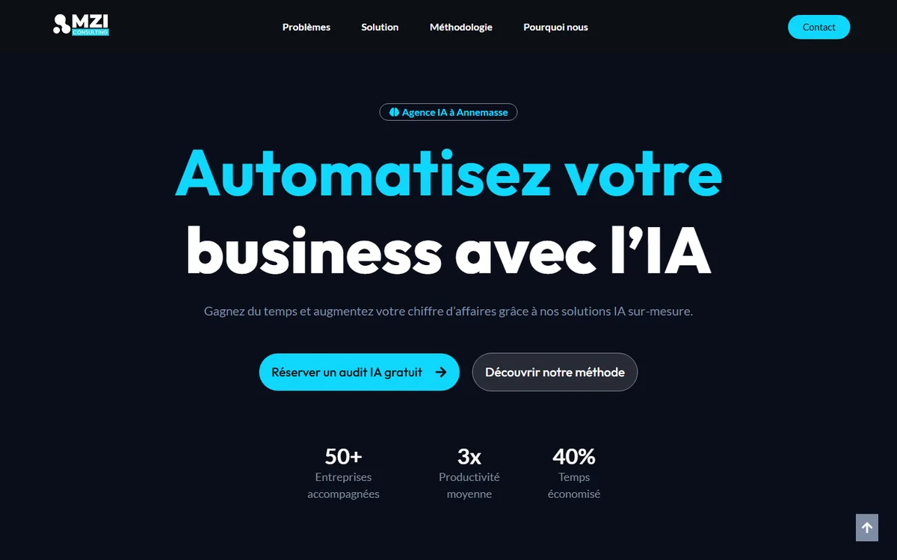

Un site bien construit qui freine ses propres ambitions.
Le site actuel exécute proprement l’existant qu’il documente : SEO mécanique impeccable (100/100), zéro décalage de mise en page, une identité visuelle marquante. Mais il reste structurellement une carte de visite : une seule page, aucun lead mesurable identifiable, une résistance limitée à l’examen d’un lecteur humain comme d’un agent IA — et une adresse suisse inscrite dans ses propres mentions légales (§4) qui suggère une ambition géographique jamais formalisée dans son contenu.
Synthèse
Quatre scores sont mesurés automatiquement (Lighthouse/PageSpeed) ; les autres domaines n’ont pas d’équivalent outillé et sont évalués qualitativement à partir des preuves détaillées dans chaque section.
Scores mesurés (Lighthouse, exécution locale du 24/09/2026, 07:59 UTC)
Deux mesures en laboratoire donnent des résultats très différents pour la performance mobile (69 en exécution locale vs 98 via PageSpeed Insights, 40 minutes plus tard) — l’écart et sa cause probable (cache serveur) sont détaillés en §11.
Notes qualitatives par domaine
| Domaine | Évaluation | Base |
|---|---|---|
| Architecture du site | Faible | Qualitatif — §2 |
| SEO on-page (éditorial) | Moyen | Qualitatif — §3 |
| SEO local | Faible | Qualitatif — §4 |
| Données structurées | Faible à moyen | Qualitatif — §5 |
| Réseaux sociaux | Moyen | Qualitatif — §6 |
| Visibilité IA (GEO/AEO) | Moyen | Mesuré (67 %) + qualitatif — §7 |
| Confiance / E-E-A-T | Faible | Qualitatif — §8 |
| UX et conversion | Moyen à bon | Qualitatif — §9 |
| Design visuel | Bon avec réserves | Qualitatif — §10 |
Les 5 priorités
-
Réparer les échecs d’accessibilité bloquants
Repère
<main>absent, bouton sans nom accessible, lien d’évitement cassé, contraste au survol des boutons principaux. Impact double : utilisateurs de technologies d’assistance ET agents IA, qui s’appuient sur le même arbre d’accessibilité (§7, §12). -
Clarifier l’ambition envers le marché suisse
Le contenu actuel ne mentionne jamais « Genève » ni « Suisse ». Pourtant Annemasse appartient à l’agglomération transfrontalière du Grand Genève, le
llms.txtdu site décrivait autrefois l’activité comme « Consultant IA Genève », et ses mentions légales déclarent une adresse à Genève pour le propriétaire du site (§4, §7). Si MZI souhaite capter cette clientèle, cela suppose des pages dédiées, aujourd’hui absentes (§2, §4). -
Fiabiliser les preuves de confiance
Chiffres-clés (50+, 3x, 40 %…) et témoignages sans source ni vérifiabilité. Un audit qui vend la rigueur de l’IA doit d’abord démontrer la sienne (§8).
-
Corriger les erreurs on-page à faible effort
alt="default-logo", image Open Graph sous-dimensionnée, faute dans un CTA,llms.txtobsolète. Gains rapides, effort minimal (§3, §6, §7). -
Réduire le coût du fond animé sans perdre l’identité
La plus longue tâche du thread principal (2,1 s) est probablement l’animation de fond ; 102 éléments animés sont détectés. L’identité visuelle peut être conservée avec une version allégée, notamment sur mobile (§10, §11).
Gains attendus
Aucun pourcentage de gain n’est avancé pour MZI Consulting spécifiquement : aucune donnée de conversion ou de trafic du site n’a été fournie dans les sources de cet audit. À titre de repère sectoriel, Google documente les Core Web Vitals comme signal de classement, et une étude Google/Deloitte largement citée associe des gains de vitesse à des hausses de conversion (« Milliseconds Make Millions », web.dev) — ces références donnent une direction, pas un chiffre garanti pour ce site.
Architecture et SEO stratégique
Le site est un one-pager : une seule URL indexable substantielle, un menu qui ne pointe que vers des ancres internes, et 3 pages annexes légales. Cette structure plafonne mécaniquement le référencement, quelle que soit la qualité du contenu.
Une seule requête principale possible par page
- Preuve
-
Le sitemap XML du site (index) ne référence qu’un seul
page-sitemap.xml, lui-même limité à 4 URL : l’accueil et 3 pages légales (mentions légales, politique de confidentialité, politique de cookies). Le menu principal ne contient que des ancres internes :#probleme,#solution,#methodologie,#pourquoi-nous. Source : sitemap XML du site, code source de la page d’accueil (menu) - Impact
- Une page ne peut raisonnablement se positionner que sur une poignée de requêtes étroitement liées. Impossible de cibler séparément « audit IA Annemasse », « automatisation IA Genève » et « intelligence artificielle PME Suisse romande » avec une seule URL sans la diluer.
- Correction
- Déployer une arborescence de pages dédiées (proposition ci-dessous), chacune répondant à une intention de recherche précise.
Indice d’une architecture plus large ayant existé
- Preuve
- Le fichier
llms.txtdu site (généré automatiquement, non modifié depuis) référence une page/consultant-ia-a-annemasse/— qui renvoie une erreur 404 — et décrit l’activité comme « Consultant IA Genève », un positionnement absent du contenu actuel de l’accueil. Source : https://mzi-consulting.com/llms.txt (vérifié en direct), voir détail §7 - Impact
- Signal probable qu’une structure multi-pages (ou un positionnement Genève) a existé puis a été abandonnée sans nettoyage des traces — lien mort, fichier d’accompagnement obsolète.
- Correction
- Vérifier l’historique du site (sauvegardes, Search Console) avant de reconstruire l’arborescence, pour ne pas perdre un éventuel historique de positionnement déjà acquis sur ces URL.
Arborescence proposée (10 pages + 3 pages légales existantes)
Structure proposée si MZI souhaite développer sa présence au-delà d’Annemasse — vers le Grand Genève et la Suisse romande, un marché qu’elle n’adresse pas aujourd’hui mais semble avoir visé par le passé (§4, §7) — organisée par intentions transactionnelles (recherche d’un prestataire), informationnelles (comprendre l’IA appliquée) et de réassurance (preuve, méthode).
Services
- Audit IA gratuit/services/audit-ia/
- Automatisation IA/services/automatisation-ia/
- Intégration IA sur-mesure/services/integration-ia/
Zones desservies
- Agence IA à Annemasse/agence-ia-annemasse/
- Agence IA à Genève/agence-ia-geneve/
- IA pour PME en Suisse romande/ia-pme-suisse-romande/
Confiance
- Notre méthode/methode/
- Études de cas/etudes-de-cas/
- FAQ/faq/
Conversion & contenu
- Contact (NAP complet)/contact/
- Blog/blog/
- (existant, inchangé) mentions légales, confidentialité, cookies
| Page | Requête cible | Intention de recherche |
|---|---|---|
| Accueil | agence IA Annemasse | Navigationnelle / commerciale |
| Audit IA gratuit | audit IA gratuit entreprise | Transactionnelle |
| Automatisation IA | automatisation IA entreprise | Transactionnelle |
| Intégration IA sur-mesure | intégration intelligence artificielle PME | Transactionnelle |
| Agence IA à Annemasse | consultant IA Annemasse | Locale / commerciale |
| Agence IA à Genève | agence intelligence artificielle Genève | Locale / commerciale |
| IA pour PME en Suisse romande | automatisation IA PME Suisse romande | Locale / commerciale |
| Notre méthode | méthode audit IA entreprise | Informationnelle |
| Études de cas | étude de cas automatisation IA PME | Informationnelle / preuve |
| FAQ | questions audit IA entreprise (longue traîne) | Informationnelle, cible aussi les extraits IA (§7) |
| Blog | variable selon les articles | Informationnelle, fraîcheur du site |
| Contact | contacter agence IA Annemasse | Transactionnelle |
Les requêtes cibles ci-dessus sont des propositions à valider par une recherche de mots-clés dédiée (volumes, concurrence) — elles ne sont pas mesurées, contrairement aux constats du reste de cet audit.
SEO on-page
Le score Lighthouse SEO de 100/100 ne couvre que des vérifications mécaniques (balises présentes, lisibles par un robot). Plusieurs défauts éditoriaux concrets ne sont pas détectés par cet outil.
Title générique, marque absente
- Preuve
Agence IA à Annemasse | Automatisation & Solutions IA – Expert IA— 3 formulations d’activité empilées, « MZI Consulting » absent.Source : relevé des balises SEO de la page d’accueil- Impact
- Le title dilue l’intention (3 angles à la fois) et ne construit pas la reconnaissance de marque dans les résultats de recherche.
- Correction
- Un title par page ciblant une seule intention, incluant la marque : par ex. « Audit IA gratuit pour PME à Annemasse | MZI Consulting ».
Le texte brut du H1 se lit « votrebusiness », sans espace
- Preuve
- Balisage source :
<span>Automatisez votre</span><br>business avec l'IA. L’affichage est correct — le<br>sépare visuellement « votre » et « business » sur deux lignes, sans faute visible à l’écran. Mais il n’y a pas d’espace dans le texte source avant le<br>: le texte brut, tel que le lisent un outil, un moteur de recherche ou certains agents IA (qui ignorent la mise en forme visuelle), devient « votrebusiness ».Source : relevé des balises SEO de la page d’accueil (Balises Hn) et code source de la page d’accueil - Impact
- Aucun impact visuel pour un visiteur humain. Effet limité mais réel sur l’extraction automatique du texte (recherche, lecteurs d’écran en mode texte brut, agents IA) où « votre » et « business » sont lus comme un seul mot.
- Correction
- Ajouter un espace avant le
<br>dans le balisage source.
Hiérarchie de titres rompue par les chiffres-clés
- Preuve
- Ordre réel des titres :
H1→H3 « 50+ »→H3 « 3x »→H3 « 40% »→ premierH2. Trois H3 consécutifs sans H2 parent, avec pour seul contenu un nombre sans contexte.Source : relevé des balises SEO de la page d’accueil (Balises Hn) - Impact
- Hiérarchie non conforme (on ne saute pas de H1 à H3) ; pour un lecteur d’écran, un titre « 50+ » sans contexte n’apporte aucune information de navigation.
- Correction
- Ne pas baliser des chiffres bruts en Hn ; utiliser un texte avec le nombre en évidence visuelle (via le style, pas la sémantique), sous un H2 de section correctement placé dans l’ordre.
Texte alternatif du logo non descriptif
- Preuve
<img class="hfe-site-logo-img" src="…Group-61-1-1.png" alt="default-logo">— valeur par défaut du thème, jamais personnalisée.Source : code source de la page d’accueil, ligne du widget hfe-site-logo- Impact
- Présent sur chaque page, ce texte alternatif générique n’apporte ni contexte de marque ni valeur SEO.
- Correction
- Renseigner un
alt="MZI Consulting"dans les réglages du logo du site (thème / personnalisation WordPress).
Image « Pourquoi nous » sans texte alternatif
- Preuve
alt=""sur l’image 1500×1168 de la section « Pourquoi nous choisir ? ».Source : inventaire des images du site, code source de la page d’accueil- Impact
- Faible en soi (l’image est en partie décorative), mais l’absence systématique de texte alternatif réfléchi sur les deux seules images de contenu du site est un signal de négligence à corriger.
- Correction
- Ajouter un alt bref et factuel, par exemple « Illustration : collaboration en entreprise et outils de marketing digital ».
Trois libellés différents pour le même appel à l’action
- Preuve
- « Réserver un audit IA gratuit » (héros), « Demarrer votre audit » (section Solution, sans accent), « Demander un audit » (section Méthodologie) — trois formulations pour, selon toute vraisemblance, la même action de contact.Source : code source de la page d’accueil (boutons id 9ecb9d5, 77bfee5, et bouton de la section méthodologie)
- Impact
- Incohérence de microcopy qui brouille le parcours utilisateur, plus une faute d’orthographe (« Demarrer » sans accent circonflexe).
- Correction
- Unifier sur un seul libellé pour la même action ; corriger l’accent.
Maillage interne inexistant
- Preuve
- En dehors des 3 liens légaux du pied de page, aucun lien contextuel n’existe dans le corps du texte — conséquence directe de l’absence de pages vers lesquelles pointer.Source : contenu textuel extrait de la page d’accueil (liens du pied de page)
- Impact
- Aucune distribution de la pertinence thématique en interne ; aucun signal de structure du site pour les moteurs.
- Correction
- Se résout mécaniquement en déployant l’arborescence proposée en §2, avec des liens contextuels entre pages de service, pages locales et études de cas.
Meta robots et canonical corrects
- Preuve
index, follow, max-image-preview:large, max-snippet:-1, max-video-preview:-1; canonical auto-référencé sur l’URL propre.Source : relevé des balises SEO de la page d’accueil- Impact
- Aucun obstacle technique à l’indexation de la page actuelle.
SEO local
MZI Consulting n’a jamais communiqué, dans le contenu actuel du site, une ambition envers la Suisse. Mais deux sources l’indiquent indirectement : le llms.txt du site (§7) décrivait autrefois l’activité comme « Consultant IA Genève », et ses propres mentions légales déclarent une adresse à Genève pour le propriétaire du site (ci-dessous). Le contenu visible, lui, ne mentionne la Suisse nulle part.
Aucune adresse ni téléphone visibles sur le site
- Preuve
- Le pied de page ne contient que la mention « Agence IA à Annemasse | Haute-Savoie, France » — aucune adresse postale, aucun numéro de téléphone (aucun lien
tel:, aucune suite de chiffres au format téléphonique) n’apparaît dans le contenu extrait de la page.Source : contenu textuel extrait de la page d’accueil, recherche par motif dans le code source de la page d’accueil - Impact
- Sans adresse ni téléphone (NAP — Nom, Adresse, Téléphone), impossible d’établir la correspondance entre le site et une fiche Google Business Profile, condition de base du référencement local.
- Correction
- Publier une adresse postale complète (ou a minima la zone de chalandise précise) et un numéro de téléphone cliquable (
tel:), idéalement sur une page Contact dédiée.
Aucune fiche Google Business Profile détectée
- Preuve
- Aucun lien vers
google.com/maps,business.google.comou une URLg.pagen’a été trouvé dans le HTML rendu.Source : recherche par motif dans le code source de la page d’accueil - Impact
- Sans confirmer l’existence réelle d’une fiche (non vérifiable depuis le site seul), son absence de lien depuis le site prive au minimum d’un signal de confiance et de rappel de proximité pour l’utilisateur.
- Correction
- Créer/vérifier la fiche Google Business Profile et l’intégrer (lien direct + éventuellement carte) sur la page Contact.
Cinq formulations différentes du nom de l’entreprise
- Preuve
-
MZI Consulting(copyright pied de page),MZI-CONSULTING(meta description),Agence IA à Annemasse(title, og:site_name),Expert IA à Annemasse(nom Organization en JSON-LD),Consultant IA Annemasse(nom WebSite en JSON-LD). Source : relevé des balises SEO de la page d’accueil, contenu textuel extrait de la page d’accueil - Impact
- La cohérence du nom d’entité (NAP) à travers les métadonnées est un signal utilisé par Google pour associer un site à une entreprise locale. Cinq variantes affaiblissent ce signal.
- Correction
- Choisir « MZI Consulting » comme nom canonique partout (title, meta, JSON-LD Organization/WebSite, og:site_name).
Les mentions légales déclarent une adresse à Genève, jamais reprise ailleurs sur le site
- Preuve
- Page
/mention-legale/: « Propriétaire du site : MZI Consulting – Contact : contact@mzi-consulting.com – Adresse : Chemin des Mines 2, 1202 Genève. » et « Directeur de publication : M. Murenzi. » Le pied de page de l’accueil, lui, affiche uniquement « Agence IA à Annemasse | Haute-Savoie, France » — aucune des deux pages ne mentionne l’autre adresse.Source : https://mzi-consulting.com/mention-legale/ (collectée le 24/09/2026), contenu textuel extrait de la page d’accueil - Impact
- Le propriétaire légal du site est déclaré à Genève, alors que le reste du site (title, H2, footer) positionne l’activité comme exclusivement française, à Annemasse. C’est, avec le
llms.txt(§7), un second indice concret que le marché suisse fait partie de l’histoire de l’entreprise — sans être assumé dans la communication actuelle du site. - Correction
- Clarifier la structure réelle (entité suisse, entité française, ou une seule entité opérant dans les deux pays) avant de publier une adresse complète sur le site. Si MZI souhaite capter la clientèle genevoise, cette adresse existante est un point de départ concret pour une page locale Genève (§2).
La Suisse (Genève, Suisse romande) n’apparaît nulle part dans le contenu visible
- Preuve
- Aucune occurrence de « Genève » ou « Suisse » dans le texte visible de l’accueil ; toutes les mentions géographiques portent sur « Annemasse ».Source : contenu textuel extrait de la page d’accueil
- Impact
- Si MZI Consulting souhaite capter la clientèle du Grand Genève et de Suisse romande — une hypothèse crédible compte tenu de l’adresse genevoise de son propre propriétaire (ci-dessus) et de l’ancien positionnement « Consultant IA Genève » de son
llms.txt(§7) — ce marché est aujourd’hui structurellement invisible en recherche : aucune requête locale suisse ne peut faire remonter ce site. - Correction
- Si cette ambition est confirmée : des pages locales dédiées (voir §2) plutôt qu’une simple mention ajoutée à l’accueil, pour éviter de diluer le positionnement Annemasse déjà établi.
Données structurées
Le plugin Yoast SEO génère un graphe JSON-LD de base, correct mais minimal. Les types qui apporteraient le plus de valeur pour ce site (activité locale, services, questions fréquentes) sont absents.
Existant
Graphe @graph avec WebPage, WebSite (+ SearchAction), Organization (nom, URL, logo uniquement — sans adresse, téléphone ni sameAs), BreadcrumbList (un seul niveau : « Accueil »), ImageObject.
{
"@type": "Organization",
"name": "Expert IA à Annemasse",
"url": "https://mzi-consulting.com/",
"logo": { "@type": "ImageObject", "url": "…Group-61-1-1.png", "width": 100, "height": 37 }
// ni address, ni telephone, ni sameAs
}Source : relevé des balises SEO de la page d’accueil (JSON-LD complet)
Aucun schéma LocalBusiness / ProfessionalService
- Preuve
- Confirmé par lecture complète du graphe JSON-LD : aucun type
LocalBusiness,ProfessionalService, ni propriétésaddress/geo/telephone/openingHours. - Impact
- Prive Google d’un signal structuré fort pour le pack local et les résultats enrichis liés à une activité locale.
- Correction
- Ajouter un bloc
ProfessionalServiceavecaddress,areaServed(Annemasse, Genève, Suisse romande) — conditionné à disposer d’une adresse réelle à publier (§4).
Aucun schéma Service
- Preuve
- Les 3 offres mentionnées dans le texte (analyse, automatisation, intégration) ne sont balisées nulle part en
Service. - Impact
- Opportunité manquée d’apparaître dans des résultats enrichis « service » et de clarifier l’offre pour les moteurs.
- Correction
- Un objet
Servicepar page de service créée en §2.
Aucun schéma FAQPage
- Preuve
- Aucune section de questions/réponses n’existe sur la page actuelle (recherche du terme « FAQ » et « question » infructueuse dans le HTML rendu).
- Impact
- Format particulièrement efficace pour les extraits enrichis Google ET pour l’extraction par les moteurs IA (voir §7) — actuellement inexploité.
- Correction
- Créer une page FAQ (§2) avec balisage
FAQPage.
Témoignages non balisés en Review — à ne pas faire sans vérifiabilité
- Preuve
- 8 témoignages affichés en texte simple, sans balisage
Review/AggregateRating. - Impact
- C’est en l’état correct : Google sanctionne le balisage
Reviewauto-déclaré et non vérifiable (voir §8 sur la vérifiabilité de ces témoignages). - Correction
- Ne baliser en
Reviewqu’après avoir rendu les témoignages vérifiables (plateforme tierce, ou at minima nom d’entreprise + lien) — l’ordre des opérations importe.
Réseaux sociaux
Les balises Open Graph sont présentes et cohérentes dans leur structure ; leur contenu contient une erreur dimensionnelle simple à corriger.
Image Open Graph sous-dimensionnée
- Preuve
og:image:width= 375,og:image:height= 423 — bien en-dessous du format recommandé par Facebook/LinkedIn de 1200 × 630. Fichier confirmé par téléchargement direct :creative-polygonal-brain-…-utc-1-3.jpg, 375 × 423 px, et aucune variante plus grande n’existe sur le serveur (seule URL disponible testée).Source : relevé des balises SEO de la page d’accueil, inventaire des images du site- Impact
- Aperçu potentiellement flou, mal recadré ou remplacé par une image générique lors du partage sur les réseaux.
- Correction
- Générer une image dédiée au format 1200 × 630 (recadrage de la photo actuelle ou nouvelle composition avec le logo MZI et un message clair).
og:site_name n’utilise pas le nom de marque
- Preuve
og:site_name= « Agence IA à Annemasse », alors que le nom de marque au pied de page est « MZI Consulting ».Source : relevé des balises SEO de la page d’accueil- Impact
- Même problème de cohérence de nom qu’en §4, visible cette fois dans les partages sociaux.
- Correction
- Aligner sur « MZI Consulting », cohérent avec la correction proposée en §4.
Twitter Card correctement configurée en repli
- Preuve
<meta name="twitter:card" content="summary_large_image">présent ; les champs title/description/image ne sont pas dupliqués, X/Twitter utilisera les balises Open Graph en repli — comportement standard et correct.Source : code source de la page d’accueil- Impact
- Aucune action requise sur ce point isolément — mais hérite du même défaut d’image que ci-dessus tant que l’og:image n’est pas corrigée.
Visibilité dans les moteurs IA (GEO/AEO)
Lighthouse propose depuis peu une catégorie « Navigation agentique », expérimentale, qui évalue la lisibilité du site par des agents IA. MZI Consulting y obtient 67 % (2/3).
robots.txt : accès autorisé aux robots
- Preuve
User-agent: */Disallow:(vide) — aucune restriction de crawl, y compris pour les robots IA (GPTBot, ClaudeBot… ne sont pas mentionnés, donc non bloqués).Source : fichier robots.txt du site- Impact
- Aucun obstacle à l’exploration du site par les moteurs de recherche IA.
llms.txt existe mais décrit un site qui n’est plus en ligne
- Preuve
-
https://mzi-consulting.com/llms.txtrépond 200 et contient, généré automatiquement par un plugin d’hébergement (« Hostinger Tools Plugin ») :
Le lien vers# Consultant IA Genève ## Pages - [Consultant IA à Annemasse](https://mzi-consulting.com/consultant-ia-a-annemasse/) - [Accueil](https://mzi-consulting.com/): Intelligence artificielle sur mesure à Genève. Optimisez vos opérations et votre rentabilité…/consultant-ia-a-annemasse/renvoie une erreur 404 (vérifié en direct). Le positionnement « Genève » qu’il décrit ne correspond à aucun contenu de l’accueil actuel (§4). Source : vérification directe de https://mzi-consulting.com/llms.txt et de la page liée, 24/09/2026 - Impact
- Un agent IA qui consulte ce fichier — c’est précisément son rôle — reçoit une description erronée de l’activité et un lien mort. L’audit Lighthouse
llms-txtdonne pourtant un score parfait (1/1) : il vérifie uniquement la structure Markdown (présence d’un H1), pas l’exactitude du contenu. - Correction
- Régénérer
llms.txtavec le contenu réel du site, ou le retirer en attendant, plutôt que de laisser une description trompeuse en ligne.
Arbre d’accessibilité mal formé pour les agents
- Preuve
- Audit Lighthouse
agent-accessibility-tree: échec (score 0), motif « ARIA commands must have an accessible name », élément fautif :div#scrollTopBtn > a.elementor-button[role="button"](bouton retour en haut).Source : rapport Lighthouse mobile du 24/09/2026, audit agent-accessibility-tree - Impact
- Même cause racine qu’en accessibilité humaine (§12) : un contrôle sans nom accessible est aussi illisible pour un agent IA qui navigue via l’arbre d’accessibilité que pour un lecteur d’écran.
- Correction
- Identique à la correction d’accessibilité §12 — un seul correctif sert les deux audiences.
Absence totale de contenu question/réponse
- Preuve
- Aucune structure de type question/réponse (FAQ) sur l’accueil.Source : contenu textuel extrait de la page d’accueil, code source de la page d’accueil
- Impact
- Les moteurs de réponse IA (AI Overviews, ChatGPT Search, Perplexity…) favorisent l’extraction de paires question/réponse explicites ; un site qui n’en propose pas est moins susceptible d’être cité directement.
- Correction
- Page FAQ avec balisage
FAQPage(§2, §5) — bénéfice partagé entre SEO classique et AEO.
Confiance et E-E-A-T
E-E-A-T (Expérience, Expertise, Autorité, Fiabilité) est le cadre que Google utilise pour évaluer la fiabilité d’un contenu, en particulier pour les sites à caractère commercial. C’est le domaine le plus faible de cet audit : quasiment aucune preuve de confiance vérifiable de façon indépendante.
8 témoignages non vérifiables
- Preuve
-
Les 8 témoignages affichés sont tous notés « 5/5 », sans nom d’entreprise, sans lien (LinkedIn, site web), sans photo, sans plateforme d’avis tierce identifiable, sans date. Exemple :
« L’audit réalisé a été un véritable tournant pour notre structure. Nous perdions un temps fou sur la saisie de données ; aujourd’hui, tout est automatisé. Une agence à l’écoute et très pro sur Annemasse. »Jean-Pierre Morel — aucune entreprise, aucun lien vérifiable
Source : contenu textuel extrait de la page d’accueil, lignes 99–114 - Impact
- Un lecteur — humain ou moteur — ne peut vérifier qu’un seul de ces témoignages existe réellement : aucun ne peut être recoupé avec une entreprise, un profil ou une plateforme d’avis identifiable.
- Correction
- Remplacer progressivement par des témoignages nommés (entreprise + lien, avec consentement du client), ou les héberger sur une plateforme tierce (Google, Trustpilot) et les afficher par API/widget plutôt qu’en texte statique.
Chiffres-clés sans source ni méthodologie
- Preuve
- « 50+ » entreprises accompagnées, « 3x » productivité moyenne, « 40 % » temps économisé, « +60 % » clients potentiels, « 2x » rentabilité — aucun de ces chiffres n’est accompagné d’une période, d’un échantillon ou d’une source, dans aucun fichier collecté.Source : contenu textuel extrait de la page d’accueil
- Impact
- Des chiffres invérifiables affaiblissent l’argumentaire commercial autant qu’ils l’illustrent — un visiteur avisé ou un concurrent peut les contester sans que le site puisse y répondre.
- Correction
- Documenter la méthode de calcul (même sommairement, en note de bas de page), ou à défaut retirer les chiffres non défendables. Conformément à la règle de contenu de ce projet, aucune valeur de remplacement n’est proposée ici — c’est à MZI Consulting de fournir la donnée réelle : [À CONFIRMER : source et méthode de calcul des chiffres-clés].
« Expert certifié » sans certification nommée
- Preuve
- Texte exact : « Formation approfondie et certifications reconnues en intelligence artificielle et automatisation digitale. » — aucune certification n’est nommée, aucun organisme cité.Source : contenu textuel extrait de la page d’accueil, ligne 131
- Impact
- Une affirmation d’expertise non étayée a moins de poids qu’une certification nommée et vérifiable (par ex. un organisme reconnu, un partenariat technologique).
- Correction
- [À CONFIRMER : nom de la ou des certifications réelles] — à nommer explicitement, avec logo/lien si disponible.
Aucun profil d’expert nommé
- Preuve
- La section « Pourquoi nous choisir ? » présente 4 arguments génériques (Expert certifié, Approche personnalisée, Résultats concrets, Vision business + technique) sans nom, photo ni lien vers un profil individuel (LinkedIn ou autre). Un nom existe pourtant : les mentions légales désignent « M. Murenzi » comme directeur de publication (§4) — jamais repris ni présenté ailleurs sur le site.Source : contenu textuel extrait de la page d’accueil, lignes 125–143 ; https://mzi-consulting.com/mention-legale/
- Impact
- E-E-A-T valorise l’expertise d’individus identifiables, pas seulement celle d’une structure abstraite.
- Correction
- Ajouter une page « À propos » ou une section présentant nommément le ou les fondateurs/consultants (M. Murenzi et/ou autres), leur parcours réel et un lien LinkedIn.
Mentions légales : hébergeur et responsable identifiés, aucun numéro d’immatriculation
- Preuve
- La page
/mention-legale/identifie un hébergeur complet (O2Switch, adresse et téléphone) et un directeur de publication nommé (M. Murenzi). En revanche, aucun numéro d’immatriculation n’y figure — ni SIRET français, ni numéro IDE/UID suisse (format CHE-xxx.xxx.xxx) — alors que l’adresse déclarée du propriétaire du site y est en Suisse (§4).Source : https://mzi-consulting.com/mention-legale/ (collectée le 24/09/2026) - Impact
- Pour une entreprise commerciale, l’absence de tout numéro d’immatriculation empêche un client potentiel — ou Google — de vérifier l’existence légale de MZI Consulting auprès d’un registre officiel. Un manque de preuve de plus, dans la continuité des chiffres-clés et témoignages non sourcés ci-dessus.
- Correction
- Ajouter le numéro d’immatriculation pertinent selon la structure juridique réelle de l’entreprise (SIRET si l’activité est enregistrée en France, IDE/UID si l’entité est suisse) — à clarifier en même temps que l’adresse du propriétaire du site (§4).
UX et conversion
Le parcours est simple par construction (page unique, défilement vertical), avec de bonnes pratiques ponctuelles et des frictions identifiables.
Formulaire de contact court et correctement structuré
- Preuve
- 4 champs seulement (nom, e-mail, téléphone, message), avec
aria-required="true"sur les champs obligatoires ; 3 éléments de réassurance juste au-dessus (« Sans engagement », « Réponse sous 24h », « Audit personnalisé »).Source : code source de la page d’accueil (formulaire Contact Form 7), contenu textuel extrait de la page d’accueil - Impact
- Peu de friction déclarative pour l’utilisateur ; bonne pratique de réassurance immédiatement avant la conversion.
Quatre appels à l’action, trois formulations, une seule destination
- Preuve
- Voir détail §3 : « Réserver un audit IA gratuit », « Demarrer votre audit », « Demander un audit » pointent tous vers
#audit, le même formulaire. - Impact
- Dilue la mémorisation de l’action attendue et complique le suivi analytique (impossible de savoir facilement quel CTA convertit le mieux si leur texte varie sans raison).
- Correction
- Un seul libellé, éventuellement personnalisé par la section qui précède (mais alors de façon délibérée, pas accidentelle) — et un paramètre de suivi (UTM ou identifiant d’événement) distinct par position pour mesurer la performance de chaque emplacement.
Liens du pied de page trop petits pour le tactile
- Preuve
- Lien « Politique de confidentialité » : zone cliquable de 152,5 × 19,5 px (le minimum recommandé est 24 × 24 px) avec un espacement insuffisant vers le lien voisin « Politique de cookies ».Source : rapport Lighthouse mobile du 24/09/2026, audit target-size
- Impact
- Risque de toucher le mauvais lien sur mobile, en particulier pour les utilisateurs ayant une motricité réduite. Détail complet en §12.
- Correction
- Augmenter le padding vertical des liens de la liste du pied de page.
Aucun contact direct visible (téléphone, chat)
- Preuve
- Le seul moyen de contact exposé est le formulaire ; aucun numéro de téléphone cliquable ni widget de chat n’a été détecté.Source : contenu textuel extrait de la page d’accueil, code source de la page d’accueil
- Impact
- Pour un service B2B à cycle de décision parfois rapide, l’absence d’un canal immédiat (appel, chat) peut faire perdre des prospects pressés — lié au manque plus général de coordonnées (§4).
- Correction
- Ajouter un numéro cliquable une fois publié (§4) ; évaluer l’intérêt d’un chat selon la disponibilité réelle de l’équipe pour y répondre.
Design visuel
Identité visuelle cohérente et reconnaissable (bleu nuit, accent cyan électrique, typographie Outfit très affirmée) mais avec des incohérences de détail relevées lors de la construction du design system de référence (disponible sur demande).

1 2 3- 1Logo au texte alternatif générique (
alt="default-logo") — voir §3. - 2Première ligne du H1 forcée en graisse 700 par un style en ligne, la seconde ligne hérite de la graisse 800 du H1 — rupture visuelle non intentionnelle à l’intérieur d’un même titre.
- 3Bouton principal : au survol, le texte passe en blanc sur fond
#09c6eb, un contraste de 2,04:1 — bien en-dessous du seuil AA de 4,5:1. Détail complet en §12.
Bordures héritées non intentionnelles
- Preuve
- Les badges de section, les cartes de bénéfices et le cadre du formulaire de contact utilisent une bordure sans couleur explicitement définie, qui hérite donc de la couleur du texte du
body(#333333) au lieu d’une couleur de la palette de marque.Source : relevé des styles CSS réels du site, design system de référence (disponible sur demande) - Impact
- Détail invisible à l’œil nu isolément, mais révèle une bordure « par défaut » jamais explicitement stylée — dette de style qui peut se manifester différemment après une future mise à jour de thème.
- Correction
- Définir explicitement une couleur de bordure cohérente avec la palette (probablement
#7e8da3, déjà utilisée ailleurs pour des bordures intentionnelles).
Le fond animé porte un coût de performance direct
- Preuve
- Le canvas de fond « réseau neuronal » (nœuds et liaisons animés en continu) est la source la plus probable de la plus longue tâche du thread principal mesurée (2,1 s) — détail en §11.
- Impact
- Choix esthétique fort et cohérent avec le positionnement « IA », mais son coût en performance mobile n’est probablement pas nécessaire à son effet visuel perçu.
- Correction
- Conserver l’effet en le rendant meilleur marché : limiter le nombre de nœuds sur mobile, réduire la fréquence de rafraîchissement, ou le désactiver sous
prefers-reduced-motion(bonne pratique d’accessibilité par ailleurs absente du site).
Cohérence typographique et colorimétrique globale
- Preuve
- 4 couleurs de fond, un accent unique (
#10d7fd), deux familles de police (Outfit, Lato) utilisées de façon cohérente sur l’ensemble des sections analysées.Source : relevé des styles CSS réels du site - Impact
- Base solide pour construire les futures pages sans repartir de zéro — voir le design system de référence (disponible sur demande) pour les tokens réutilisables.
Performance
Deux mesures en laboratoire, réalisées à environ 40 minutes d’intervalle, donnent des résultats très différents. Aucune donnée de terrain (utilisateurs réels) n’est disponible pour ce site.
| Mesure | Lighthouse local (07:59) | PageSpeed Insights (08:38) |
|---|---|---|
| Performance (mobile) | 69/100 | 98/100 |
| Total Blocking Time | 3 170 ms | 0 ms |
| Cumulative Layout Shift | 0,001 | 0,008 |
| Largest Contentful Paint | 1,6 s | 1,8 s |
| Speed Index | 3,3 s | 2,0 s |
| Données de terrain (CrUX) | Aucune donnée — trafic probablement insuffisant pour que Google en collecte | |
Sources : rapport Lighthouse mobile du 24/09/2026 (exécution locale) et rapport PageSpeed Insights du 24/09/2026 (exécution Google, Moto G Power émulé, connexion 4G lente). Le score desktop mesuré localement est de 80/100, TBT 250 ms.
Écart massif entre deux mesures en laboratoire
- Preuve
- TBT mobile : 3 170 ms (mesure locale) contre 0 ms (PageSpeed Insights, 40 minutes plus tard). Aucune des deux mesures n’est une donnée de terrain — la case « Découvrez l’expérience de vos utilisateurs » de PageSpeed Insights affiche explicitement « Aucune donnée ».Source : rapport Lighthouse mobile du 24/09/2026, rapport PageSpeed Insights du 24/09/2026 (page 1)
- Impact
- Explication la plus probable : mise en cache serveur (WP Rocket, détecté dans les scripts de la page). La première visite déclenche probablement une reconstruction du cache HTML/CSS, coûteuse en temps de thread principal ; la visite suivante bénéficie d’un cache déjà chaud. Un utilisateur réel arrivant juste après un vidage de cache (déploiement, mise à jour de plugin) subirait la version lente.
- Correction
- Vérifier la configuration du cache de préchargement (cache warming) pour que les pages soient reconstruites en arrière-plan plutôt qu’à la première visite ; envisager un test de charge répété pour confirmer cette hypothèse avant d’investir dans une correction plus lourde.
La plus longue tâche du thread principal provient probablement de l’animation de fond
- Preuve
- Travail total du thread principal : 8,3 s, dont 4,95 s en catégorie « Other » et 2,44 s en « Style & Layout ». La tâche longue individuelle la plus coûteuse dure 2 128 ms et est attribuée au script de la page elle-même (pas à un script tiers). 102 éléments animés sont détectés par l’audit
non-composited-animations(transitions de couleur non accélérées matériellement).Source : rapport Lighthouse mobile du 24/09/2026, audits mainthread-work-breakdown, long-tasks, non-composited-animations - Impact
- Cohérent avec la présence du canvas « réseau neuronal » animé en continu (décrit dans le design system de référence, disponible sur demande) et des nombreuses transitions au survol (cartes, boutons). Ce sont des causes probables, pas certaines : l’audit Lighthouse n’attribue pas nommément le script en cause.
- Correction
- Profiler l’exécution avec les outils de développement du navigateur pour confirmer l’attribution exacte, puis alléger l’animation comme proposé en §10.
48 Kio de CSS inutilisé (76 % du fichier)
- Preuve
- Fichier
wp-content/cache/min/1/5658673b7cf11c36831ba2a6b36cea00.css: 64,8 Kio chargés, 49,2 Kio (75,9 %) non utilisés sur cette page.Source : rapport Lighthouse mobile du 24/09/2026, audit unused-css-rules - Impact
- Poids de téléchargement et de traitement CSS inutile — cohérent avec le constat indépendant que la police Roboto Slab est chargée en 9 graisses sans être utilisée par aucun élément de la page (source : relevé des styles CSS réels du site).
- Correction
- Nettoyer la configuration Elementor (widgets non utilisés), retirer le chargement de Roboto Slab si elle reste inutilisée, et s’assurer que l’optimisation CSS du cache régénère bien un fichier propre après ce nettoyage.
Aucun décalage de mise en page notable
- Preuve
- CLS mesuré à 0,001 (local) et 0,008 (PageSpeed Insights) — très largement sous le seuil « bon » de 0,1.Source : rapport Lighthouse mobile du 24/09/2026, rapport PageSpeed Insights du 24/09/2026
- Impact
- Contraste net avec le TBT : la stabilité visuelle au chargement est excellente, quel que soit le run mesuré.
Accessibilité
Score Lighthouse de 90/100 (mobile) à 94/100 (desktop) — de bons résultats globaux qui masquent plusieurs échecs bloquants, confirmés indépendamment par trois sources : Lighthouse, PageSpeed Insights et une lecture directe du code source.
Aucun repère <main>
- Preuve
- Audit
landmark-one-main: échec (score 0), « Document does not have a main landmark ». Confirmé par recherche directe : aucune balise<main>dans le code source de la page d’accueil. PageSpeed Insights le confirme sous « Bonnes pratiques » : « Le document ne contient pas de repère principal ».Source : rapport Lighthouse mobile du 24/09/2026, rapport PageSpeed Insights du 24/09/2026 (page 4), code source de la page d’accueil - Impact
- Les utilisateurs de lecteur d’écran ne peuvent pas sauter directement au contenu principal via la navigation par repères — obligation de traverser tout l’en-tête à chaque visite.
- Correction
- Envelopper le contenu principal (hors en-tête et pied de page) dans une balise
<main>.
Lien d’évitement présent dans le code mais non fonctionnel
- Preuve
<a class="hfe-skip-link" href="#content">Passer au contenu principal</a>existe bel et bien, mais aucun élément de la page ne porteid="content"(0 occurrence vérifiée). Le lien est donc présent visuellement/structurellement mais ne mène nulle part.Source : code source de la page d’accueil- Impact
- Plus trompeur qu’une simple absence : un utilisateur clavier qui active ce lien (fonctionnalité censée lui faire gagner du temps) n’obtient aucun effet, sans indice sur la raison.
- Correction
- Faire pointer
href="#content"vers l’iddu futur élément<main>(ou lui donner directementid="content").
Bouton « retour en haut » sans nom accessible
- Preuve
-
Aucun texte, aucun<a class="elementor-button elementor-size-sm" role="button"> <svg aria-hidden="true" class="e-fas-arrow-up">…</svg> </a>aria-label; la seule icône SVG est explicitement masquée aux technologies d’assistance (aria-hidden="true"). Confirmé par l’audit Lighthouseagent-accessibility-treeet par PageSpeed Insights : « Les éléments button, link et menuitem n’ont pas de noms accessibles ». Source : code source de la page d’accueil (id scrollTopBtn), rapport Lighthouse mobile du 24/09/2026, rapport PageSpeed Insights du 24/09/2026 (page 3) - Impact
- Un utilisateur de lecteur d’écran qui atteint ce bouton entend un contrôle sans description — non-conformité WCAG 4.1.2 (Nom, rôle, valeur).
- Correction
- Ajouter
aria-label="Retour en haut de page"sur l’élément.
Contraste insuffisant au survol du bouton principal
- Preuve
- Couleurs mesurées au survol (état
:hover) du bouton héros « Réserver un audit IA gratuit » : texte#ffffffsur fond#09c6eb. Ratio de contraste calculé (formule WCAG) : 2,04:1 — sous le seuil AA de 4,5:1 pour du texte de cette taille.Source : relevé des styles CSS réels du site (section « Boutons du héros — normal vs survol », calcul appliqué à ces valeurs) - Impact
- Le même défaut affecte au moins deux autres boutons partageant le même style de survol (« Découvrir notre méthode » a un traitement différent — fond blanc translucide — non concerné). Lisibilité réduite pour les utilisateurs malvoyants, en particulier au moment précis où l’utilisateur interagit avec l’action la plus importante de la page.
- Correction
- Foncer la couleur de fond au survol (ou éclaircir le texte vers une teinte moins pure que le blanc pur sur ce fond) jusqu’à atteindre 4,5:1.
Libellé de timeline invisible
- Preuve
- Le widget de timeline (« stratégie IA », confirmé présent dans le code source de la page d’accueil via le composant
twae-wrapper) affiche un libellé secondaire en#0c0f14— la couleur de texte par défaut du thème — sur un fond#0a0e1a: ratio de contraste 1,00:1, texte essentiellement invisible.Source : design system de référence (disponible sur demande), section Contraste WCAG AA ; confirmé par la présence du composant dans le code source de la page d’accueil - Impact
- Information de la timeline potentiellement illisible pour tous les utilisateurs, pas seulement les malvoyants — probablement une couleur héritée par défaut jamais surchargée pour ce composant spécifique.
- Correction
- Définir explicitement une couleur claire pour ce libellé (ex.
#7e8da3ou#ffffffselon la hiérarchie visuelle voulue).
Zones tactiles trop petites en pied de page
- Preuve
- Audit
target-size: échec. Lien « Politique de confidentialité » : 152,5 × 19,5 px (minimum requis 24 × 24 px) ; espacement insuffisant vers le lien voisin « Politique de cookies » (19,6 px de diamètre d’espace sûr au lieu de 24 px minimum).Source : rapport Lighthouse mobile du 24/09/2026, audit target-size - Impact
- Risque de clic accidentel sur le mauvais lien légal, en particulier sur mobile.
- Correction
- Augmenter la hauteur de ligne et l’espacement vertical entre les liens de la liste du pied de page.
Débordement horizontal en mobile (+8 px)
- Preuve
- Largeur de page mesurée (
document.documentElement.scrollWidth) : 409 px pour un viewport de 390 px. Élément en cause :ul.elementor-icon-list-items.elementor-inline-items(liste d’étoiles des témoignages), débordement de 8 px.Source : relevé de débordement mobile - Impact
- Léger défilement horizontal parasite possible sur mobile ; impact visuel mineur mais mesurable.
- Correction
- Contraindre la largeur de la liste d’icônes ou réduire l’espacement entre les étoiles sur les petits écrans.
Pourquoi Lighthouse ne détecte aucun de ces problèmes de contraste
- Preuve
- L’audit automatisé
color-contrastobtient un score parfait (1/1, mode binaire, zéro élément signalé) dans le rapport Lighthouse — malgré les deux échecs réels documentés ci-dessus.Source : rapport Lighthouse mobile du 24/09/2026, audit color-contrast (details.items = []) - Impact
- Deux limites techniques connues des outils automatisés expliquent cet écart : (1) l’audit évalue l’état par défaut du DOM au chargement, sans simuler l’état
:hover— le contraste défaillant du bouton n’existe que lors du survol, invisible à l’analyse statique ; (2) le fond du libellé de timeline est peint dynamiquement (canvas / composant JS), pas déclaré commebackground-colorCSS — l’outil ne peut pas résoudre la couleur de fond réellement affichée. PageSpeed Insights le rappelle explicitement dans sa propre documentation : « La détection automatique ne peut détecter qu’une partie des problèmes […] il est donc conseillé d’effectuer également un test manuel. » - Correction
- Ne jamais considérer un score d’accessibilité automatisé comme une garantie de conformité — cet audit lui-même combine plusieurs sources pour cette raison.
Feuille de route 30/60/90 jours
Priorisation par rapport impact/effort : les corrections à fort impact et faible effort d’abord, les chantiers structurels ensuite.
Corrections rapides
- Accessibilité bloquanteajouter
<main>, nommer le bouton retour en haut, réparer le lien d’évitement (§12) - H1corriger l’espace manquant (§3)
- alt du logoremplacer « default-logo » par « MZI Consulting » (§3)
- Contraste au survolfoncer le fond ou ajuster le texte des boutons principaux (§12)
- CTAunifier le libellé et corriger « Demarrer » (§3, §9)
- og:imageremplacer par un visuel 1200×630 (§6)
- llms.txtrégénérer ou retirer le contenu obsolète (§7)
- Nom de marqueunifier « MZI Consulting » dans title, meta, JSON-LD (§4, §6)
Chantiers structurels
- Premières pages localesGenève et/ou Suisse romande, avec adresse et téléphone (§2, §4)
- Page ContactNAP complet, lien Google Business Profile (§4)
- Données structuréesProfessionalService, Service (§5)
- Page FAQ+ balisage FAQPage (§2, §5, §7)
- Hiérarchie de titrescorriger les H3 sans H2 parent (§3)
- Nettoyage CSSretirer Roboto Slab inutilisée, réduire le CSS mort (§11)
- Chiffres-clésdocumenter la source ou les retirer (§8)
Approfondissement
- Études de cas nomméesremplacer les témoignages anonymes par des preuves vérifiables (§8)
- Pages de serviceet reste de l’arborescence (§2)
- Blogcadence éditoriale pour la fraîcheur et l’autorité thématique (§2, §7)
- Animation de fondversion allégée mobile /
prefers-reduced-motion(§10, §11) - SuiviSearch Console + première lecture de données de terrain une fois le trafic suffisant (§11)
Audit produit à partir de la collecte du 24/09/2026. Chaque constat cite son fichier source ; les recommandations sans donnée chiffrée disponible sont formulées qualitativement, conformément à la règle de contenu du projet. Sources de collecte disponibles sur demande.
Version imprimée — les liens externes sont indiqués entre parenthèses.